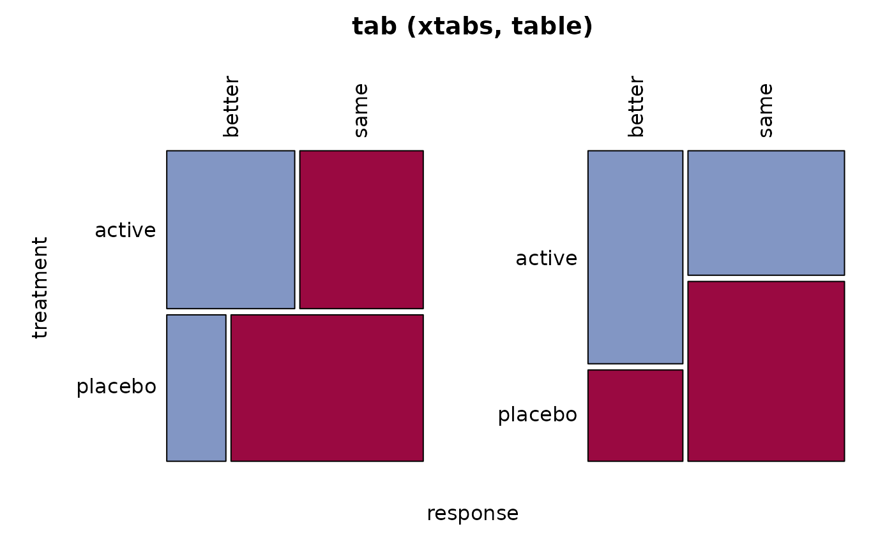
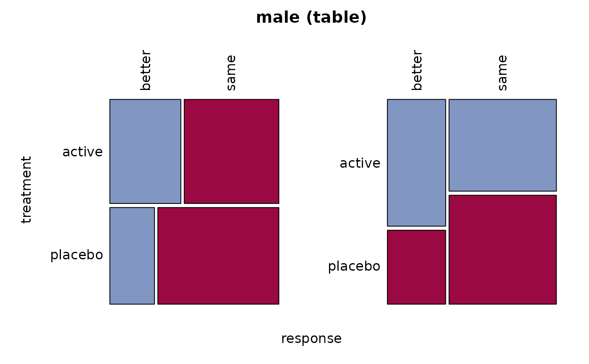

Breslow-Day Test for Homogeneity of the Odds Ratios
BreslowDayTest.RdCalculates the Breslow-Day test of homogeneity for a \(2 \times 2 \times k\) table, in order to investigate if all \(k\) strata have the same OR. If OR is not given, the Mantel-Haenszel estimate is used.
BreslowDayTest(x, OR = NA, correct = FALSE)
Arguments
| x | a \(2 \times 2 \times k\) table. |
|---|---|
| OR | the odds ratio to be tested against. If left undefined (default) the Mantel-Haenszel estimate will be used. |
| correct | If TRUE, the Breslow-Day test with Tarone's adjustment is computed, which subtracts an adjustment factor to make the resulting statistic asymptotically chi-square. |
Details
For the Breslow-Day test to be valid, the sample size should be relatively large in each stratum, and at least 80% of the expected cell counts should be greater than 5. Note that this is a stricter sample size requirement than the requirement for the Cochran-Mantel-Haenszel test for tables, in that each stratum sample size (not just the overall sample size) must be relatively large. Even when the Breslow-Day test is valid, it might not be very powerful against certain alternatives, as discussed in Breslow and Day (1980).
Alternatively, it might be better to cast the entire inference problem
into the setting of a logistic regression model. Here, the underlying
question of the Breslow-Day test can be answered by investigating whether an
interaction term with the strata variable is necessary (e.g. using a
likelihood ratio test using the anova function).
References
Breslow, N. E., N. E. Day (1980) The Analysis of Case-Control Studies Statistical Methods in Cancer Research: Vol. 1. Lyon, France, IARC Scientific Publications.
Tarone, R.E. (1985) On heterogeneity tests based on efficient scores, Biometrika, 72, pp. 91-95.
Jones, M. P., O'Gorman, T. W., Lemka, J. H., and Woolson, R. F. (1989) A Monte Carlo Investigation of Homogeneity Tests of the Odds Ratio Under Various Sample Size Configurations Biometrics, 45, 171-181
Breslow, N. E. (1996) Statistics in Epidemiology: The Case-Control Study Journal of the American Statistical Association, 91, 14-26.
Author
Michael Hoehle <hoehle@math.su.se>
See also
Examples
migraine <- xtabs(freq ~ ., cbind(expand.grid(treatment=c("active", "placebo"), response =c("better", "same"), gender =c("female", "male")), freq=c(16, 5, 11, 20, 12, 7, 16, 19)) ) # get rid of gender tab <- xtabs(Freq ~ treatment + response, migraine) Desc(tab)#> ------------------------------------------------------------------------------ #> tab (xtabs, table) #> #> Summary: #> n: 106, rows: 2, columns: 2 #> #> Pearson's Chi-squared test (cont. adj): #> X-squared = 7.3178, df = 1, p-value = 0.006827 #> Fisher's exact test p-value = 0.00491 #> McNemar's chi-squared = 5.0256, df = 1, p-value = 0.02497 #> #> estimate lwr.ci upr.ci' #> #> odds ratio 3.370 1.462 7.772 #> rel. risk (col1) 2.164 1.237 3.783 #> rel. risk (col2) 0.642 0.471 0.875 #> #> #> Phi-Coefficient 0.282 #> Contingency Coeff. 0.272 #> Cramer's V 0.282 #> #> #> response better same Sum #> treatment #> #> active freq 28 27 55 #> perc 26.4% 25.5% 51.9% #> p.row 50.9% 49.1% . #> p.col 70.0% 40.9% . #> #> placebo freq 12 39 51 #> perc 11.3% 36.8% 48.1% #> p.row 23.5% 76.5% . #> p.col 30.0% 59.1% . #> #> Sum freq 40 66 106 #> perc 37.7% 62.3% 100.0% #> p.row . . . #> p.col . . . #> #> #> ---------- #> ' 95% conf. level #>#> ------------------------------------------------------------------------------ #> female (table) #> #> Summary: #> n: 52, rows: 2, columns: 2 #> #> Pearson's Chi-squared test (cont. adj): #> X-squared = 6.7595, df = 1, p-value = 0.009325 #> Fisher's exact test p-value = 0.005189 #> McNemar's chi-squared = 1.5625, df = 1, p-value = 0.2113 #> #> estimate lwr.ci upr.ci' #> #> odds ratio 5.818 1.676 20.203 #> rel. risk (col1) 2.963 1.274 6.891 #> rel. risk (col2) 0.509 0.310 0.836 #> #> #> Phi-Coefficient 0.400 #> Contingency Coeff. 0.371 #> Cramer's V 0.400 #> #> #> response better same Sum #> treatment #> #> active freq 16 11 27 #> perc 30.8% 21.2% 51.9% #> p.row 59.3% 40.7% . #> p.col 76.2% 35.5% . #> #> placebo freq 5 20 25 #> perc 9.6% 38.5% 48.1% #> p.row 20.0% 80.0% . #> p.col 23.8% 64.5% . #> #> Sum freq 21 31 52 #> perc 40.4% 59.6% 100.0% #> p.row . . . #> p.col . . . #> #> #> ---------- #> ' 95% conf. level #>#> ------------------------------------------------------------------------------ #> male (table) #> #> Summary: #> n: 54, rows: 2, columns: 2 #> #> Pearson's Chi-squared test (cont. adj): #> X-squared = 0.88353, df = 1, p-value = 0.3472 #> Fisher's exact test p-value = 0.2635 #> McNemar's chi-squared = 2.7826, df = 1, p-value = 0.09529 #> #> estimate lwr.ci upr.ci' #> #> odds ratio 2.036 0.648 6.398 #> rel. risk (col1) 1.592 0.741 3.418 #> rel. risk (col2) 0.782 0.526 1.163 #> #> #> Phi-Coefficient 0.167 #> Contingency Coeff. 0.164 #> Cramer's V 0.167 #> #> #> response better same Sum #> treatment #> #> active freq 12 16 28 #> perc 22.2% 29.6% 51.9% #> p.row 42.9% 57.1% . #> p.col 63.2% 45.7% . #> #> placebo freq 7 19 26 #> perc 13.0% 35.2% 48.1% #> p.row 26.9% 73.1% . #> p.col 36.8% 54.3% . #> #> Sum freq 19 35 54 #> perc 35.2% 64.8% 100.0% #> p.row . . . #> p.col . . . #> #> #> ---------- #> ' 95% conf. level #>BreslowDayTest(migraine)#> #> Breslow-Day test on Homogeneity of Odds Ratios #> #> data: migraine #> X-squared = 1.4929, df = 1, p-value = 0.2218 #>BreslowDayTest(migraine, correct = TRUE)#> #> Breslow-Day Test on Homogeneity of Odds Ratios (with Tarone #> correction) #> #> data: migraine #> X-squared = 1.4905, df = 1, p-value = 0.2221 #>salary <- array( c(38, 12, 102, 141, 12, 9, 136, 383), dim=c(2, 2, 2), dimnames=list(exposure=c("exposed", "not"), disease =c("case", "control"), salary =c("<1000", ">=1000")) ) # common odds ratio = 4.028269 BreslowDayTest(salary, OR = 4.02)#> #> Breslow-Day test on Homogeneity of Odds Ratios #> #> data: salary #> X-squared = 0.080143, df = 1, p-value = 0.7771 #>